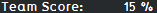
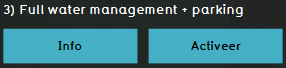
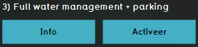

import logging; reload(logging)
FORMAT=("%(asctime) -8s %(message) s")
logging.basicConfig(format=FORMAT, filename="testLog.txt", level=logging.DEBUG)
logging.info("[info] Admin runs session LVL2...")
if Settings.isLinux() or Settings.isWindows():
click()
if exists(Pattern().similar(0.90), FOREVER):
print"[info] End score level 2 reached!"
logging.info("[info] End score level 2 reached!")
click( )
click(Pattern().targetOffset(72,12))
print"[info] Level 3 activated..."
logging.info("[info] Level 3 activated...")
elif Settings.isMac():
print"WIP - MAC not scripted yet!"
else:
print"OS error!"
)
click(Pattern().targetOffset(72,12))
print"[info] Level 3 activated..."
logging.info("[info] Level 3 activated...")
elif Settings.isMac():
print"WIP - MAC not scripted yet!"
else:
print"OS error!"